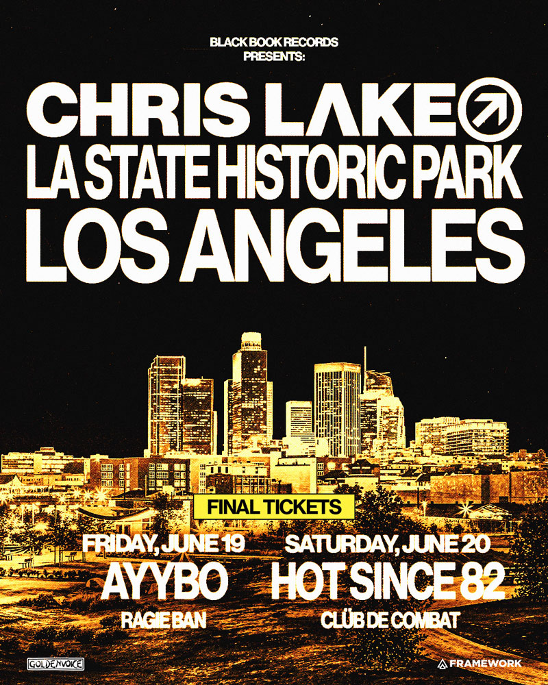
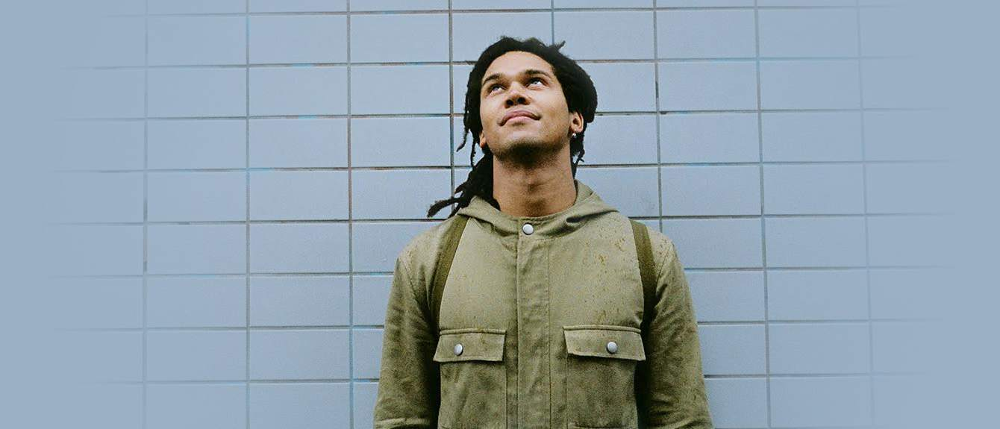
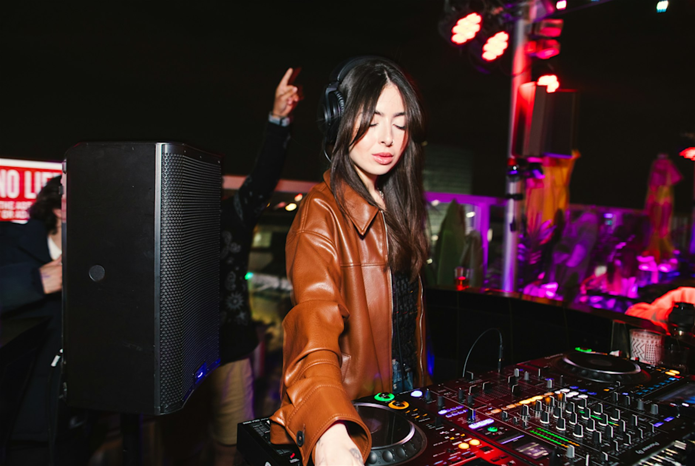

LA Events
2026-06-17 · 29 picks across 3 days · ⭐ top pick · ranked for your taste
Friday · June 19
Electronic & dance
5pm-10pm
Electronic⭐ PICK
Friday's edition of the rooftop series you keep coming back to — eight floors over DTLA, sun going down, rotating local house DJs keeping it smooth and skip-free. Free with RSVP, so just walk in early before it caps. — sounds like Sunset Sessions, open-air house

5pm
Electronic⭐ PICK
The first of a three-night Lake takeover of the park, and the 18+ Friday is the loosest of them — go for the wide-open-field, hands-up version of his sound rather than a tasteful one. — AYYBO — Rising US tech-house producer, big-room festival energy — exactly the mainstream-fun end of the lane, not noise.

9pm
Electronic⭐ PICK
An open-to-close set from Eddie C is exactly the kind of night to plant yourself for — no warmup DJ, no peak-time grandstanding, just one of the slo-mo disco crowd's best diggers building the room all night. Free with RSVP makes it a no-brainer. — Eddie C — Canadian-in-Berlin slo-mo disco-edits heavyweight (Edward Currelly) — lush, dubby, generous grooves on Endless Flight; runs the 7 Inches of Love imprint with The Mole. A tracked name and a perfect open-to-close selector.
10pm
Electronic
A long-running soulful-electronic night at El Cid for $7 — the kind of low-key, groove-forward room where the selection does the work and nobody's filming. Easy eastside add to a Friday. — sounds like Dam-Funk, Sounds of Blackness edits
7:30pm-11:45pm
Electronic
A Mochilla-style 'Like No One Is Watching' digger summit — DJ Nuts and Cut Chemist trading rare grooves with Detroit's Waajeed in the mix. Less peak-time, more for people who care about where the records come from; the Friday move if you'd rather nerd out than rage. — DJ Nuts — Sao Paulo crate-digger revered for his Brazilian/global-beats edits (Wax Poetics 'Cultura Copia' mixtapes) — deep, eclectic, all-vinyl selector.
11pm
Electronic
A location-TBA late one pairing a Detroit lifer with one of the few real vocalists in house — the kind of small, queer-leaning warehouse night that tends to outshine the big rooms this weekend. — DJ Minx — Detroit house matriarch, Women on Wax founder — tracked artist; deep, soulful, dancefloor-first selection.
10:30pm
Electronic
A recurring soulful-house residency in the back room of Gold Diggers — the warm, vocal, gospel-adjacent end of the spectrum rather than peak-time tools. Good low-key Friday if you want grooves over a big lineup. — B-Wade — Resident behind the recurring 'Acts of Service Sounds' soulful-house night at Gold Diggers — 'sounds for the soul, all night long,' classic vocal/gospel-tinged deep house.
11pm
Electronic
An all-night-long set from one of modern techno's rhythm specialists, location-TBA-until-two-hours-before like WORK always does it. This is the proper hypnotic-techno end of the weekend — go if you want one DJ taking you the whole way, not the rooftop-groove night. — SHDW — Co-founder of the Mutual Rytm label and half of German duo SHDW & Obscure Shape — driving, hypnotic, melodic-leaning techno; squarely the refined European end you like.
10pm-2am
Electronic
Free-with-RSVP weekly leaning disco and nu-disco — low-stakes and unpretentious, the kind of spot to start a Friday before something bigger rather than make the whole night. — FARRALONE — LA disco/house selector — couldn't verify a label home, but the billing reads classic nu-disco-into-house warmth.
9:30pm
Electronic
A Juneteenth warehouse rave from Black Techno Matters with Waajeed anchoring it — techno reconnected to its Black Detroit roots, which is about the most meaningful way to spend the holiday on a dancefloor. — Waajeed — Detroit producer (Dirt Tech Reck, ex-Slum Village camp) — tracked artist; soulful, politically-charged techno and house from the source.
10pm
Electronic
A queer warehouse rave for Pride leaning fast and trance-y — LYDO and Frankie Teardrop are the real-deal underground end of that sound, not a generic circuit party. Skews harder and more peak-time than the rooftop-groove lane, so go in for the energy, not for selection. — LYDO — NYC-based, BASEMENT resident and X-TRA.SERVICES founder — fast, syncopated, heady techno-trance from the queer underground.
Film
7pm
Film
Vidiots kicks off a Bill Duke weekend with his 1992 LA narco-noir — Laurence Fishburne undercover, Jeff Goldblum sleazy, and an underrated entry in early-'90s Black cinema. Good excuse to finally try the Eagle Rock theater you've been meaning to hit. — sounds like New Jack City, Deep Cover
4pm
Film
George Miller's desert-chase masterpiece on the big screen at Vidiots — relentless, practical-stunt insanity that's worth seeing loud and projected rather than at home. Ari's flagged Vidiots as a venue he wants to get into; this is a great excuse. — sounds like Vidiots repertory programming, 70mm action revivals
Saturday · June 20
Electronic & dance
5pm
Electronic⭐ PICK
The strongest night of the Lake run — adding Hot Since 82 gives the open-air a deeper, more European backbone than the Friday, so this is the one to prioritize if you only do one. — Hot Since 82 — UK house heavyweight, Knee Deep In Sound boss — tracked artist; rolling, hypnotic, extended-set sensibility that elevates the whole bill.

5pm
Electronic⭐ PICK
Bradley Zero headlining a Midnight Lovers open-air day party is about as close to that Sunset Sessions feeling as the weekend gets — sun, disco-leaning house, real selection, no requests. Build Saturday around the 5pm start. — Bradley Zero — Founder of Peckham's Rhythm Section International and the long-running NTS show — a genuine tastemaker selector spanning disco, broken beat, deep house and global grooves. One of the better daytime sets you can catch in LA this weekend.

4pm
Electronic⭐ PICK
The pool-party edition of Sunset Sessions — the rooftop-vinyl-house series at Level 8 that's basically Ari's reference point for a good open-air Saturday. The lineup's local-resident rather than a marquee guest, but the setting and sound are the whole reason to go. — Tamara Lanza — LA multi-genre DJ and Level 8 / Sunset Sessions regular — ranges disco house through deep and melodic; reliable rooftop-groove selector.

11am
Electronic⭐ PICK
World Cup watch party crossed with a Dirtybird-deep DJ marathon on giant LED screens — a goofy premise on paper, but a genuinely stacked all-day bill that justifies showing up even if you don't care about the football. — Claude VonStroke — Dirtybird founder (aka Barclay Crenshaw) — playful, bass-heavy West Coast house; he's billed leading the 'Team USA' set here.

10pm
Electronic⭐ PICK
We Own The Night marks 15 years of its no-velvet-ropes 'real LA underground rare house' parties by flying Antal in from Amsterdam for an extended set — that's a serious pairing of crowd and selector, and exactly the dirty-disco-into-house energy worth chasing a TBA address for. — Antal — Rush Hour co-founder, Amsterdam — one of the deepest diggers alive; obscure disco, raw house, broken beat and beyond. Flying in for this. A tracked name.
3pm
Party
A sapphic Pride-weekend day party — more community-and-vibes than a billed-DJ night, so it's about the room, not the selection. On the radar if Pride is the priority over the music. — sounds like Pride day party
10:30pm
Electronic
Gold Diggers' twice-monthly disco party in East Hollywood — a reliably fun late Saturday for boogie and classic house in an intimate room a short hop from Silver Lake. No headliner billed, but the residents know the format. — sounds like nu-disco, boogie edits
10pm
Electronic
Not a four-on-the-floor night — this is the Allah-Las' crate-digging crew spinning psych, surf, library and global oddities off vinyl at Zebulon. A great listening-bar-flavored hang if you want grooves and discovery instead of a dancefloor. — Reverberation Radio — The Allah-Las' long-running weekly podcast and DJ crew — deep-crate '60s-onward psych, surf, folk-rock, soul and global obscurities played off the records (Calico Discos label).
Live music
7pm
Live
Not an electronic night at all — this is the heady, masked-ritual psych-folk corner of Zebulon, worth it if you want a left-field listening experience instead of a dancefloor this weekend. — Ak'chamel, The Giver of Illness — Anonymous Houston duo doing desert-scorched ritual-folk and lo-fi psychedelia — masked, costumed, occult live show; fits the Zebulon experimental lane more than the dance one.
Other
9am
Other
A Juneteenth-weekend morning run/wellness gathering at CAAM in Exposition Park — a culture-and-community event, not a music one. Mentioning it for the weekend context, not the lane.
9am
Other
A morning camera-and-coffee meetup for the photo/video crowd — gear talk, coffee and shooting, not a music thing. Off the main lane unless Ari's specifically into the photography-community side. — sounds like Cameras & Coffee creative meetups
Sunday · June 21
Electronic & dance
6:30pm
Electronic
A free summer-solstice dance at LACMA pairing Richie Hawtin with John Gerrard's 'SPIRITS' artwork — Hawtin in a museum-plaza art context rather than a club, so expect something more textural and hypnotic than a peak-time techno hammer. Worth it for the name and the setting; RSVP required. — Richie Hawtin — Windsor/Detroit-Berlin minimal-techno icon (Plastikman, F.U.S.E.; founder of Plus 8 and M_nus) — a defining name in stripped, hypnotic techno. A tracked name; this is a free art-context set, not a club.
6pm
Electronic
Sunday Sessions is one of the bigger vinyl-only crews in the country, and this is their open-air Apotheke session — exactly the all-wax, no-laptop house you want closing out a solstice Sunday. Low-key but the real deal. — Neeko — Resident selector for Sunday Sessions LA, the vinyl-only series at Apotheke — all-wax house and disco.
2pm
Electronic
Day Trip's daytime melodic-house format in the park, anchored by Cassian — the more emotional, Afterlife-leaning counterweight to the Lake tech-house weekend if peak-time isn't your mood. — Cassian — Australian producer, Grammy-winning mixer on RÜFÜS DU SOL's 'Alive' — dark-but-dreamy melodic house; the marquee draw here.
Live music
7pm
Live
A one-off improvising quintet built around Dave Harrington (Darkside) and Oh Sees' John Dwyer at Zebulon — heady, psych-leaning instrumental jamming rather than songs. Squarely in the experimental-band lane Ari wants surfaced, and Zebulon's the perfect room for it. — Dave Harrington — Half of Darkside (with Nicolas Jaar) and a fixture of LA's improv scene — guitar/electronics-led psychedelic jams; this is his quintet.
Film
3:30pm
Film
Bill Duke was in the cast, which is why Vidiots slots 'Predator' into his weekend — and a 35mm print of the 1987 jungle classic is the right way to see it. Already sold out, so it's a 'if you have a ticket' note. — sounds like Predator, '80s action